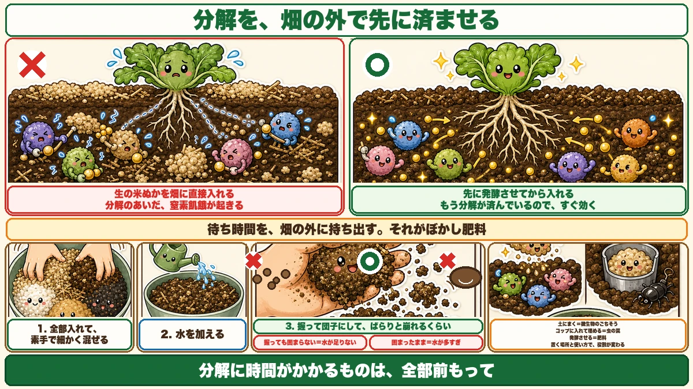
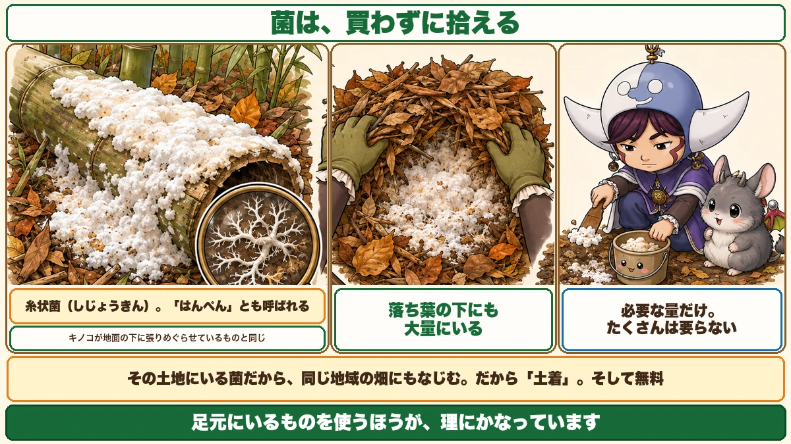
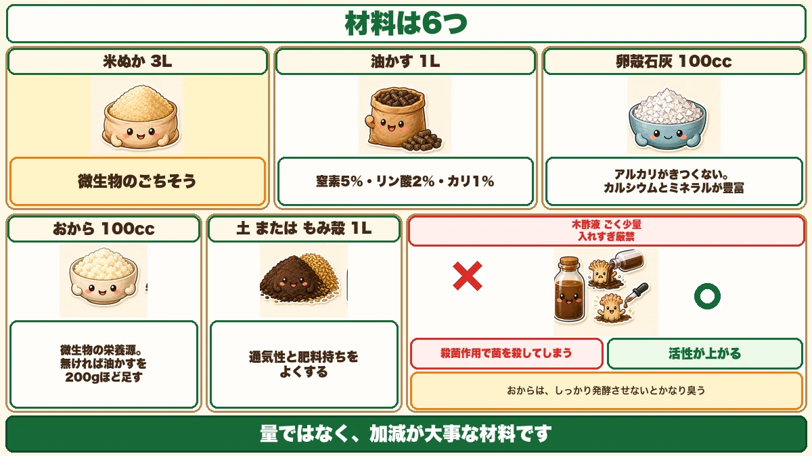

ぼかし肥料の作り方｜配合例・水分の目安・温度と切り返し・完成の見分け方
どうも、8150（えいこう）です🌱 家庭菜園歴8年、理科の教員免許を持っていて、有機・無農薬で野菜を育てています。
この記事で分かること
- ぼかし肥料は、米ぬかなどの有機物を、畑に入れる前に発酵させておいた肥料です。
- 生の米ぬかや油かすをそのまま土に入れると、分解のときにガスや熱が出たり、虫が寄ってきたりします。先に発酵させておけば、その手間を畑の外ですませられます。
- 材料は、米ぬかが中心。そこに、たんぱく質の多いもの（油かす・魚粉・おから）と、薄める役の土を合わせるのが基本の形です。
- 水分の目安は「握ると固まり、指でつつくと崩れる」くらい。多すぎるより、少なめのほうが失敗しにくいです。
- 作り方には、空気を入れて混ぜる「好気（こうき）」と、袋を閉じて空気を断つ「嫌気（けんき）」の2つがあります。途中の手入れがまったく違うので、最初にどちらで作るか決めます。
- できあがりは日数で決めず、熱が冷めて、さらさらになって、いやなにおいがしないかで見ます。
- 完成したぼかしはよく効くので、最初は少なめに使って、野菜のようすを見ながら足します。
米ぬかって、精米所に行けば手に入るし、ホームセンターでも安く売っていますよね。でも「そのまま畑にまいていいの？」「ぼかしって言葉は聞くけど、なんだか難しそう」と迷っている方も多いと思います。
安心してください。ぼかし肥料は、材料を混ぜて、水を加えて、ようすを見ながら待つだけです。特別な道具もいりません。ただ、水の量と、作り方の方式だけは、最初に押さえておかないと失敗しやすいんです。
この記事では、材料選びから、仕込み、途中の手入れ、できあがりの見分け方、畑での使い方まで、順番に書いていきます。説明する人によって数字が違うところもあるので、そこは並べて比べました。
早見：ぼかし肥料の基本（ひと目で分かる目安）
材料の役割
- 米ぬか：中心になる材料。微生物のえさになり、肥料の成分も持っています。
- 油かす・魚粉・おから：たんぱく質の多い材料。発酵の進みを助け、肥料としての力を足します。
- 土（赤土・山土・培養土）：全体を薄める役。においや成分が逃げるのをおさえる、という説明もあります。入れない作り方もあります。
- もみ殻くん炭：入れる人もいれば、入れない人もいます。必須ではありません。
- 卵の殻（よく洗って乾かし、細かくしたもの）：入れる配合もあります。
- 水：発酵を始めるのに必要。量がいちばん大事です。
- 木酢液（もくさくえき）：入れるなら、ほんの少し。入れすぎると逆効果という注意があります。
配合の例（どれか1つを選ぶ）
- 家庭で少量作る例：米ぬか3L、油かす1L、卵の殻の石灰100cc、土のかわりの培養土1Lくらい
- 米ぬかと生おからで作る例：米ぬか6に対して、生おから4。もみ殻くん炭はお好みで少し
- 魚粉を使う例：米ぬか5、魚粉2、赤土2、もみ殻くん炭1
- 乳酸発酵（嫌気）の例：米ぬか7に、よく乾かしたコーヒーかす3くらい
覚えておきたい目安
- 水分：握ると固まり、指でつつくと崩れるくらい（よく「50%くらい」と言われます）
- 温度：材料のまん中で測る。40度前後から50度くらいの間で、説明が分かれます
- 切り返し（混ぜ直し）：好気で作るときだけ。温度が上がってきたら、底までしっかり混ぜます
- できあがり：好気なら3週間くらいの例があります。嫌気（乳酸発酵）なら1か月くらい、長い例だと2か月以上
- 保存：よく乾かしてから。半年以上もつという説明と、1年くらいで使い切るという説明があります
- 使う量：1平方メートルに100gくらいの例があります。最初は少なめに
いちばん大事なこと
- 水を入れすぎない
- 好気か嫌気か、最初に決めて、途中で混ぜない
- できたら、よく乾かしてから保存する

作業の手順
ここからは、実際に作る流れを順番に書いていきます。いちばん作られることが多い、空気を入れながら発酵させる「好気」のやり方を中心にしています。嫌気のやり方は、手順のあとにまとめて書きました。
手順1：作る時期を決める
ぼかし肥料は、寒すぎず暑すぎない季節がいちばん作りやすいです。春か秋ですね。
冬でも作れないことはありません。ただ、気温が低いと微生物の動きがにぶくなって、温度が上がり始めるまでに時間がかかります。真夏は逆に、温度が上がりすぎたり、虫が寄ってきたりしやすくなります。
秋に仕込んでおくと、冬のあいだに乾かして保存しておけて、春の植えつけの準備にちょうど間に合います。初めて作るなら、秋か春の、晴れの日が続くころがおすすめです。
手順2：置き場所と入れ物を用意する
好気で作るなら、空気が通る入れ物を使います。たとえば、ふたを少しずらした衣装ケース、通気性のある袋、ブルーシートの上に山にして上から布をかける、といった形です。
置き場所は、雨が当たらず、直射日光も当たらないところ。屋根のある軒下や物置の中がちょうどいいです。米ぬかは虫やネズミにとってもごちそうなので、家のすぐ近くより、少し離れた場所のほうが気楽かもしれません。
量が少ないと温度が上がりにくい、という説明もあります。少量で作るときは、段ボールや古い毛布で囲んで、冷えないようにしてあげると進みやすくなります。ただ、好気のときは空気が必要なので、ぴったり密閉はしないでください。
手順3：材料をそろえる
早見でいくつか配合の例を書きましたが、初めてなら、手に入りやすいもので1つ選べば大丈夫です。
ここでは、家庭で少量作る例でお話しします。
- 米ぬか：3L
- 油かす：1L
- 卵の殻の石灰：100ccくらい
- 培養土（または、病気の出ていない畑の土・赤土・山土）：1Lくらい
- 水：様子を見ながら
- 木酢液：入れるなら、ほんの少し
この配合を紹介している方は、おからを少し入れたり、油かすを足したりもしています。ただ、そこの量は話の中で言い直しがあって、はっきりしません。おからは「あれば少し」くらいに考えておけば十分です。
米ぬかは、なるべく新しいものを使います。古くなって、すっぱいにおいや油のにおいが強いものは避けたほうがいいです。
土は、病気が出ていない場所のものを使います。畑で病気が出た場所の土を入れると、ぼかしと一緒にまた畑へ戻すことになってしまいます。心配なら、袋入りの培養土を使えば安心です。
手順4：乾いたまま、よく混ぜる
まず、水を入れる前に、乾いた材料だけをしっかり混ぜます。
米ぬか、油かす、卵の殻、土を広げて、手やスコップで全体がむらなく同じ色になるまで混ぜてください。ここで混ざっていないと、あとで水を入れたときに、ある場所は水っぽく、ある場所は乾いたまま、ということが起きます。
生のおからを使う場合は、だまになりやすいので、ほぐしながら混ぜます。おからのかたまりは、仕込んだあとも混ぜ直すたびにくずしていくと、むらが減ります。
もみ殻くん炭を入れると、黒い粒が全体に散らばるので、混ざり具合が目で見て分かりやすい、という利点もあります。
手順5：水を少しずつ足す
ここがいちばん大事なところです。
水は、一度に全部入れません。少しずつ足して、そのたびによく混ぜます。
米ぬかは油分を含んでいるので、最初は水をはじいて、なかなか吸ってくれません。それで「まだ足りないかな」とどんどん足してしまって、気づいたらべちゃべちゃ…ということがよくあります。少し入れたら、しばらく混ぜて、なじませてから次を足すのがコツです。
生おからを使う場合は、おからが水分を持っているので、追加の水がほとんどいらないこともあります。おからの水分は、豆腐屋さんによっても、日によっても違うので、毎回、手で確かめながら足してください。
手順6：握って、水分をたしかめる
水分のちょうどいい目安は、こうです。
- 材料をひとつかみ握ると、手の中で固まる
- その固まりを指でつつくと、ほろっと崩れる
握っても固まらず、さらさらこぼれるなら、水が足りません。握ったら指のすき間から水がしみ出てくる、固まりがつついても崩れずにべたっとしている、なら水が多すぎます。
よく「水分50%くらい」と言われますが、家庭で水分を正確に測るのは難しいので、この手ざわりで判断して大丈夫です。
迷ったら、少し少なめで止めてください。水が足りない分は、あとから霧吹きで足せます。でも、多すぎた水を抜くのは大変です。乾いた米ぬかや土を足して調整するしかありません。
手順7：木酢液を入れるなら、ほんの少し
木酢液を入れる配合では、量は「ほんの少し」です。少しだと微生物への刺激になる一方、入れすぎると菌を抑える力のほうが強く出てしまう、という注意があります。
入れなくても、ぼかしは作れます。迷うなら入れなくて大丈夫です。
手順8：菌の元を入れる（入れなくても作れる）
ぼかしを発酵させるのは、微生物です。でも、微生物をわざわざ買ってこなくても大丈夫です。米ぬかや空気の中にも、もともと菌はいます。何も足さなくても、条件がそろえば発酵は始まります。
ただ、菌の元を少し入れると、発酵が早く立ち上がりやすくなります。よく使われるのは、次のようなものです。
- 前に作ったぼかし（戻しぼかし）：ひとつかみ混ぜると、乾いて休んでいた菌が水分を得て、また動き出します
- 竹やぶや雑木林の、落ち葉の下や朽ちた竹についている白い菌：地元の菌という意味で「土着菌（どちゃくきん）」と呼ばれます
- 納豆を食べたあとの空き容器：ついている納豆菌を使う方法です
土着菌を採ってくるのは、楽しい作業です。竹やぶに入って、朽ちた竹の皮をめくったり、落ち葉を少しどけたりすると、白い綿のようなものがついていることがあります。それをこそぎ落として持ち帰り、材料に混ぜます。
ただ、白いものが全部よい菌だとは、見た目だけでは言い切れません。ここは「採らないと作れない」ものではないので、気が向いたら試す、くらいで考えてください。

手順9：仕込んだら、温度を見る
材料を入れ物に入れたら、上から布やシートをかけておきます。好気なので、ぴったりふたはしません。
数日すると、材料のまん中から温かくなってきます。温度は表面ではなく、まん中に手を差し込むか、温度計を差して測ってください。表面や底は冷えやすいので、まん中がいちばん正直です。
ある仕込みの例では、6日目にまん中が45度くらいになっていました。ただ、これはその時の材料・量・気温での話なので、「6日たったら必ずこうなる」とは考えないでください。冬ならもっとかかりますし、夏ならもっと早いこともあります。
手順10：温度が上がったら、切り返す
温度が上がってきたら、全体を混ぜ直します。これを「切り返し」と言います。
切り返しの目安になる温度は、説明が分かれています。45〜50度くらいになったら混ぜる、という説明もあれば、40度くらいがいちばん菌が増える温度なので上がりすぎないように、という説明もあります（あとで詳しく書きます）。
どちらの説明でも共通しているのは、熱くなりすぎたら混ぜて下げる、ということです。手を入れて「熱っ」と感じるくらいなら、混ぜどきだと思ってください。
混ぜるときは、表面だけでなく、底までしっかりひっくり返します。底のほうは水がたまりやすく、そこだけ腐る方向へ進んでしまうことがあるからです。シートや入れ物の内側に水滴がついていたら、それも全体になじませるように混ぜます。
切り返しのたびに、握って水分も確かめてください。乾きすぎていたら霧吹きで少し足し、湿りすぎていたら乾いた米ぬかを足します。
最初のころは温度がどんどん上がるので、混ぜる間隔は短めに。だんだん上がり方がゆるやかになってきたら、間隔をあけていきます。
手順11：熱が冷めて、さらさらになったら完成
切り返しを続けていると、やがて温度が上がらなくなります。混ぜても温かさを感じなくなって、材料がさらさらしてきたら、できあがりです。
好気のある例では、仕込みからおよそ3週間で、このような状態になっていました。ただ、ここも日数だけで決めないでください。温度・手ざわり・においで判断するのが確実です。
においは、甘いような、みそのような、香ばしいにおいになっていれば順調です。
手順12：広げて乾かす
完成したら、すぐに袋に詰めるのではなく、一度うすく広げて乾かします。
水分が残ったまま保存すると、また発酵が始まったり、腐る方向の菌が増えたりすることがあるからです。シートの上にうすく広げて、日陰や風通しのよい場所で乾かします。ある例では2日くらい干していましたが、量や天気で変わるので、手でさわってしっとり感がなくなるまで、と考えてください。
手順13：保存する
よく乾いたら、袋に入れて保存します。発酵中は空気が必要なので閉じませんでしたが、乾いた完成品は、逆に湿気を吸わないように口を閉じて保存します。工程によって「閉じる・閉じない」が逆になるので、ここは混同しないように気をつけてください。
置き場所は、湿気の少ない、雨の当たらない場所です。米ぬかのにおいで虫やネズミが寄ってくることがあるので、ふたつきの入れ物に入れておくとさらに安心です。
嫌気（けんき）で作る場合
嫌気は、空気を断って発酵させる作り方です。乳酸菌のはたらきで発酵させるので、「乳酸発酵ぼかし」と呼ばれることもあります。
- 材料を混ぜて水分を整えるところまでは、好気と同じです
- 水分の調整に、米のとぎ汁を発酵させた液を使う例もあります
- 混ぜたら、厚手のポリ袋などにぎゅっと詰めて、空気をしっかり抜いて口を閉じます
- あとは、途中で混ぜずに置いておきます。ここが好気と大きく違うところです
- 甘ずっぱい、チーズのようなにおいがしてきたら完成のサインです
- 期間は1か月くらいの例があり、長いと2か月以上置く例もあります
好気は切り返しの手間がかかるかわりに早くでき、嫌気は手間が少ないかわりに時間がかかる、と考えると分かりやすいです。
大事なのは、途中で方式を混ぜないこと。嫌気で仕込んだのに、心配になって袋を開けて混ぜてしまうと、空気が入って、どちらつかずの状態になってしまいます。
同じ材料で、2つの方式を試すこともできる
材料を半分ずつに分けて、片方は好気、片方は嫌気で仕込んでみる、という楽しみ方もあります。同じ材料でも、においや進み方がずいぶん違うので、比べてみると発酵のしくみが体で分かってきます。

畑での使い方
できあがったぼかしの使い方です。
元肥にも、追肥にも使える
ぼかしは、植えつけ前に土に混ぜる「元肥（もとごえ）」にも、育っている途中に足す「追肥（ついひ）」にも使えます。どちらかといえば追肥に向いている、という説明もあります。
発酵がある程度すんでいるので、生の米ぬかや油かすよりも早く効きはじめ、それでいて、じわじわ長く効く、という両方の性質があると言われます。
量は少なめから
ぼかしはよく効きます。だからこそ、最初は少なめに使います。
ある例では、追肥として1平方メートルに100gくらいを使っていました。別の方は、加工した米ぬかの肥料を、同じくらいの量で追肥に使っています。ただ、材料によって肥料の成分はかなり違うので、この数字はあくまで目安です。
まずは少しまいて、葉の色や伸び方を見て、足りなそうなら足す。この順番なら失敗しにくいです。
株元に集めない
追肥するときは、株のすぐ根元ではなく、少し離れたところにまきます。根の先は、株元よりも外側に広がっているので、そのあたりにまいて、軽く土と混ぜるか、上から土を寄せておきます。
株から何cm離すかは、野菜の大きさによって変わります。株元にぎゅっと集めない、というのを覚えておけば大丈夫です。
生の米ぬかとの使い分け
米ぬかは、ぼかしの材料にもなりますし、ほかの使い方もあります。
- ぼかしの材料にする：この記事の使い方。畑の外で発酵させてから使う
- 堆肥づくりのときに少し振る：落ち葉や野菜くずの山に振ると、分解を早めてくれる
- 畑の土に直接混ぜて、土の中で発酵させる：「土ごと発酵」と呼ばれる方法。ただし、植えるまでに期間をあける必要がある
同じ米ぬかでも、使う場所によって役割が変わるんですね。生の米ぬかを畑に直接入れるときの待ち時間は、説明が分かれています（あとで書きます）。
失敗の見分け方
ぼかし作りでよくある失敗と、その見分け方・直し方です。
いつまでたっても温かくならない
- 水が足りない：握っても固まらないなら、霧吹きで少しずつ足して混ぜます
- 気温が低い：冬は立ち上がりに時間がかかります。段ボールや毛布で囲んで保温します
- 量が少なすぎる：少量だと熱がこもりにくいです。保温するか、量を増やします
- 菌のきっかけが少ない：前に作ったぼかしや、土着菌を少し足すと立ち上がりやすくなります
くさい（どぶのような、腐ったにおい）
水が多すぎて、空気が足りず、腐る方向に進んでいる可能性があります。
- 好気なら、すぐに切り返して空気を入れます
- 乾いた米ぬかや土を足して、水分を下げます
- 底に水がたまっていないか見て、底からしっかり混ぜます
発酵がうまく進んでいないと、かなり強いにおいが出ます。甘い・みそっぽい・香ばしい、なら順調。鼻をつく、どぶのような、なら水の入れすぎを疑ってください。
カビが生えた
白いカビが表面や中に広がるのは、発酵が進んでいるサインとして見られることが多いです。
黒っぽいカビや、黒ずんだかたまりが出てきたら、腐る方向に進んでいる注意のサインと言われます。水が多すぎたり、混ぜ足りなかったりした場所に出やすいです。
ただし、カビの色だけで、そのカビが何なのか、安全かどうかを決めることはできません。黒い部分が広がっている、においも悪い、というときは、無理に使わず、畑のすみの堆肥の山に入れてしまうのも1つの手です。
熱くなりすぎた
手を入れていられないほど熱くなったら、すぐに切り返します。熱くなりすぎると、菌が弱ったり、肥料の成分が逃げたりすると言われます。
広げて温度を下げる、混ぜる間隔を短くする、で調整します。
虫がわいた・ネズミが来た
米ぬかは、微生物だけでなく、虫やネズミにとってもごちそうです。保管しているだけでも、小さな虫が寄ってきたり、卵を見つけたりすることがあります。
- 発酵中も、上から布やシートをかけておく
- 材料の米ぬかは、袋のまま放置せず、ふたつきの入れ物に入れる
- 完成品はよく乾かしてから、口を閉じて保存する
完成したと思ったのに、また温かくなった
乾かし方が足りず、水分が残っていると、保存中にまた発酵が始まることがあります。もう一度広げて、しっかり乾かしてください。
説明が分かれていること
ぼかし肥料は、作る人によってやり方がかなり違います。ここでは、説明が分かれているところを並べておきます。どれが正解というより、材料や量、置き場所が違えば、ちょうどいいところも変わる、と考えてください。
切り返しの温度：40度前後か、45〜50度か
- 40度くらいを菌が増える温度と考えて、それより上がりすぎたら乾かして止める、という説明
- まん中が45〜50度くらいになったら混ぜ始める、それに合わせて混ぜる間隔を変えていく、という説明
方式や材料、保温の仕方が違うので、どちらかに統一はできません。家庭で少量作るなら、「手を入れて熱いと感じたら混ぜる」で十分です。
菌は買う必要があるか
- 何も足さなくても、材料や空気の中の菌で発酵は進む。菌の元を足すのは、立ち上がりを早めるため、という説明
- 嫌気で作るなら、乳酸菌などの資材を使う、という説明もあります
- 一方で、米のとぎ汁を発酵させた液を使って、買わずに嫌気で作っている例もあります
方式ごとに話がまざりやすいところです。少なくとも好気なら、買わなくても作れます。
保存期間：半年以上か、1年くらいか
- 湿気の来ない場所に置けば、半年以上もつ、という説明
- 1年くらいを目安に使い切る、という説明
材料、乾かし方、入れ物が違うので、同じ期限にはまとめられません。どちらにしても「よく乾かして、湿らせない」が前提です。
生の米ぬかを畑に入れてから、植えるまでの日数
ぼかしではなく、生の米ぬかを直接畑に入れた場合の話です。
- 10日〜2週間くらいあければよい、という説明
- 少なくとも1か月くらいあける、という説明
- 最低でも3か月くらいあける、という説明
ずいぶん幅がありますよね。入れる量、土の温度、混ぜ方で、分解にかかる時間が変わるためだと考えられます。量を多く入れるときや、気温が低い時期ほど、長めにあけておくと安心です。
この待ち時間が気になる方こそ、ぼかしにしてから使う意味があります。畑の外で発酵をすませておけば、こうした待ち時間を気にしなくてよくなるからです。
できあがりまでの日数
- 好気：およそ3週間の例
- 嫌気（乳酸発酵）：およそ1か月の例
- 密閉して2か月以上置く例
同じ「発酵」でも、方式によって完成のサインも違います。好気は「熱が冷めて、さらさら、みそのようなにおい」。嫌気は「甘ずっぱい、チーズのようなにおい」。好気の完成サインで嫌気を判断したり、その逆をしたりしないようにしてください。
追肥の量
- 1平方メートルに100gくらいの例
- 加工した米ぬか肥料で、90〜100gくらいの例
数字は近いですが、使っている資材が違うので、同じ推奨量だと考えないでください。どちらも「最初は少なめに、ようすを見て」が共通しています。
よくある質問
Q. 冬に作ってもいいですか？
A. 作れます。ただ、気温が低いと微生物の動きがにぶくなるので、温度が上がり始めるまでに時間がかかります。段ボールや古い毛布で囲んで保温したり、日中だけ日の当たる軒下に置いたりすると進みやすくなります。急がないなら、春まで待つのも1つの考え方です。
Q. 発酵中は、毎日見に行かないといけませんか？
A. 好気で作るなら、温度が上がってくる最初のころは、できれば毎日のぞいてください。熱くなりすぎていないか、くさくなっていないかを確かめるだけでも十分です。温度の上がり方が落ち着いてきたら、数日おきでも大丈夫です。嫌気なら、閉じたまま置いておくので、ほとんど手はかかりません。
Q. 米ぬかだけで作れますか？
A. 作れます。米ぬかに水を加えて、菌の元を少し入れるだけでも発酵は進みます。納豆の空き容器を使って、米ぬかと水だけで少量作る例もあります。油かすや魚粉を足すと、肥料としての力が強くなります。
Q. 油かすがないと、だめですか？
A. なくても作れます。たんぱく質の多い材料として、魚粉やおからでも代わりになります。どれもない場合は、米ぬか中心のぼかしとして作れば大丈夫です。
Q. 土は入れたほうがいいですか？
A. どちらでも作れます。土を入れると、全体が薄まって、においや成分が逃げるのをおさえる、という説明があります。入れるなら、病気が出ていない場所の土か、袋入りの培養土を使ってください。
Q. もみ殻くん炭は必要ですか？
A. 必須ではありません。入れると、混ざり具合が見えやすくなったり、土の改良に役立つと考えて入れる人がいます。なくても作れます。
Q. 生のもみ殻で、もみ殻くん炭の代わりになりますか？
A. 同じものとは考えないほうがいいです。もみ殻くん炭は、もみ殻を焼いて炭にしたもので、性質が違います。
Q. 雨の日に作業しても大丈夫ですか？
A. 仕込みの作業は屋根の下なら大丈夫です。ただ、完成後に広げて乾かす作業は、晴れの日にしたほうが早く乾きます。
Q. 発酵中に雨が入ってしまいました
A. 握ってみて、水っぽくなっていたら、乾いた米ぬかや土を足して、すぐに切り返してください。においが悪くなっていないかも確かめます。
Q. ベランダでも作れますか？
A. 少量なら作れます。ただ、発酵中はにおいが出ますし、虫も寄ってきやすいので、ご近所との距離や風向きには気をつけてください。嫌気で、袋を閉じて作るほうが、においは外に出にくいです。
Q. 完成したぼかしは、どの野菜にも使えますか？
A. 多くの野菜に使えます。ただ、葉ばかり茂ってしまう野菜や、肥料を控えめにしたほうがいい野菜もあるので、量はそれぞれの野菜に合わせて少なめから使ってください。
Q. ぼかしを使ったら、虫が増えた気がします
A. まいたぼかしが土の表面に出たままだと、虫が寄ってくることがあります。まいたら軽く土と混ぜるか、上から土をかけておくと寄ってきにくくなります。
Q. 去年作ったぼかしが残っています
A. 乾いた状態で、湿っていなければ、使えることが多いです。においを確かめて、かびくさい・湿っている、なら新しい仕込みの材料に「戻しぼかし」として少し混ぜて使う、という手もあります。
Q. 市販のぼかし肥料と、自分で作るのは何が違いますか？
A. 市販品は、成分がそろっていて、すぐ使える手軽さがあります。自分で作ると、材料を選べて、手元の米ぬかなどを生かせます。どちらが正解ということはないので、まずは市販品で使い方に慣れてから、自分で作ってみるのもいいと思います。
学ぶ🔬 なぜ「発酵させてから」使うのか
ここからは、ぼかし肥料のしくみについて、少しだけ深く書いておきます。読み飛ばしても大丈夫です。
生の有機物を土に入れると、何が起きるか
米ぬかや油かすのような生の有機物を、そのまま土に混ぜると、土の中の微生物が一気にそれを食べ始めます。
このとき、いくつかのことが起きます。
- 微生物が増えるために、土の中の窒素を使う。そのため、野菜が使える窒素が一時的に減ることがある
- 分解のときにガスが出る
- 分解のときに熱が出る
- においにつられて、虫が寄ってくる
植えたばかりの苗や、まいたばかりの種のすぐ近くでこれが起きると、根が弱ったり、芽がうまく出なかったりすることがあります。生の米ぬかを入れたあと、植えるまでに期間をあけるように言われるのは、このためです。
ぼかしは、それを畑の外ですませておく
ぼかし肥料は、この「分解の最初のにぎやかな時期」を、畑の外ですませておくものです。
発酵の中で、米ぬかに含まれるでんぷんなどは糖に、魚粉やおからに含まれるたんぱく質はアミノ酸に、と少しずつ分解されていく、という説明があります。分解がある程度進んでいるので、畑に入れたあと、根が吸いやすい形になるまでが早い。それでいて、まだ分解しきっていない部分が残っているので、ゆっくり長く効く。ぼかしが「早く効いて、長く効く」と言われるのは、このためです。
ただ、ぼかしを使えば、どんな問題も起きなくなる、というわけではありません。まきすぎれば、やはり濃すぎて根をいためることがあります。だからこそ、少なめから使うのが大事なんですね。
乾かすと、菌は「眠る」
完成したぼかしを乾かすと、発酵は止まります。でも、菌が全部いなくなったわけではありません。水分がなくなって、休んでいる状態です。
だから、畑にまいて土の水分にふれると、また動き出します。新しい仕込みに前のぼかしを混ぜる「戻しぼかし」で発酵が早まるのも、休んでいた菌が水分をもらって目を覚ますからです。
逆に言えば、保存中に湿気を吸うと、袋の中で菌が動き出してしまいます。保存のときに乾燥が大事なのは、このためです。
量が少ないと温度が上がりにくい理由
発酵で出る熱は、材料の量が多いほどたまりやすくなります。山が大きいと、まん中で出た熱が外へ逃げにくいからです。逆に、少しだけ作ると、出た熱がすぐに外へ逃げてしまって、温度が上がりきりません。
農家さんが大きな山で作るときと、家庭でバケツ1杯ぶん作るときで、同じ日数・同じ温度にならないのはこのためです。少量で作るときは、温度計の数字にこだわりすぎず、手ざわりとにおいで進み具合を見てあげてください。
「ぼかし」という名前
「ぼかし」という名前には、いくつかの説明があります。
- 肥料の強い効き目を、発酵させることでやわらげる（ぼかす）から
- 土などを混ぜて、肥料の成分を薄める（ぼかす）から
どちらが本当の由来かは決まっていません。どちらの説明も、「強すぎるものを、ちょうどよくする」という意味では共通しているのが面白いところです。
好気と嫌気で、はたらく菌が違う
好気で作るときは、空気の中の酸素を使って活動する菌が中心になります。こうじかびのなかまや、納豆菌のなかまなどですね。酸素を使って活発に分解するので、熱が出て、温度が上がります。だから切り返しが必要になります。
嫌気で作るときは、酸素がない状態で活動する菌が中心です。乳酸菌が代表的です。乳酸菌は、まわりを酸っぱくすることで、ほかの腐る方向の菌が増えにくい環境を作ります。熱はあまり出ないので、切り返しはいりません。
同じ「ぼかし」でも、中でおきていることが違う。だから、途中の手入れも、完成のサインも違うわけです。
なぜ水分が「多すぎ」だと失敗するのか
水が多すぎると、材料のすき間が水でふさがって、空気が入りません。好気で作っているつもりでも、中は酸素の少ない状態になって、乳酸菌のようによい方向に働く菌ではなく、腐る方向の菌が増えやすくなります。どぶのようなにおいが出るのは、このためです。
水が少なすぎる場合は、菌が動けないだけで、腐ることはあまりありません。水を足せば、また進み始めます。「迷ったら少なめ」と言われるのは、取り返しがつくかどうかの違いなんですね。
まとめ
ここまで読んでくださって、ありがとうございます！
ぼかし肥料の作り方のポイントを、もう一度まとめておきます。
- ぼかしは、生の有機物の分解を、畑の外ですませておく肥料
- 材料は米ぬかが中心。たんぱく質の材料（油かす・魚粉・おから）と、薄める土を合わせる
- 水は少しずつ。「握って固まり、つつくと崩れる」が目安。迷ったら少なめ
- 好気は切り返しが必要、嫌気は閉じたまま混ぜない。途中で方式を変えない
- 温度はまん中で測る。熱いと感じたら切り返す
- 完成は日数より「熱が冷めて、さらさら、いやなにおいがしない」で判断
- よく乾かしてから、湿気を避けて保存する
- 使うときは少なめから。株元に集めず、まいたら土をかける
最初は、量を少なめにして、1回作ってみるのがいちばんです。発酵のにおいや温かさを一度体で感じると、2回目からはぐっと楽になりますよ。
秋のうちに仕込んでおけば、春の畑づくりに使えます。米ぬかが手に入ったら、ぜひ試してみてください🌾
米ぬか
微生物のごちそうです。ぼかし肥料の主材料になります。
![[商品価格に関しましては、リンクが作成された時点と現時点で情報が変更されている場合がございます。]](https://hbb.afl.rakuten.co.jp/hgb/565b770c.0e767ab7.565b770f.2286fabc/?me_id=1245791&item_id=10001139&pc=https%3A%2F%2Fthumbnail.image.rakuten.co.jp%2F%400_mall%2Figamai-tominaga%2Fcabinet%2Fkome%2Fimgrc0133415879.jpg%3F_ex%3D240x240&s=240x240&t=picttext "[商品価格に関しましては、リンクが作成された時点と現時点で情報が変更されている場合がございます。]")

発酵油かす
窒素の供給源。米ぬかと合わせて発酵させます。
![[商品価格に関しましては、リンクが作成された時点と現時点で情報が変更されている場合がございます。]](https://hbb.afl.rakuten.co.jp/hgb/55e75fe5.20db4cd1.55e75fe7.d1ec32cc/?me_id=1194164&item_id=10000908&pc=https%3A%2F%2Fthumbnail.image.rakuten.co.jp%2F%400_mall%2Fgardening%2Fcabinet%2Fhiryousennyouhiryo%2Fomakase-1.jpg%3F_ex%3D240x240&s=240x240&t=picttext "[商品価格に関しましては、リンクが作成された時点と現時点で情報が変更されている場合がございます。]")
貝殻石灰
アルカリがきつくなく、カルシウムとミネラルを補えます。
![[商品価格に関しましては、リンクが作成された時点と現時点で情報が変更されている場合がございます。]](https://hbb.afl.rakuten.co.jp/hgb/56d21b6a.c19127f6.56d21b6b.c5473e84/?me_id=1258048&item_id=10000067&pc=https%3A%2F%2Fthumbnail.image.rakuten.co.jp%2F%400_mall%2Fkaneashop%2Fcabinet%2F12084383%2F12419790%2Fimgrc0108924525.jpg%3F_ex%3D240x240&s=240x240&t=picttext "[商品価格に関しましては、リンクが作成された時点と現時点で情報が変更されている場合がございます。]")
くん炭（もみ殻）
通気性と肥料もちをよくします。仕上がりが扱いやすくなります。
![[商品価格に関しましては、リンクが作成された時点と現時点で情報が変更されている場合がございます。]](https://hbb.afl.rakuten.co.jp/hgb/56bc30bc.01c5b89d.56bc30bd.ee310357/?me_id=1231595&item_id=10000412&pc=https%3A%2F%2Fthumbnail.image.rakuten.co.jp%2F%400_mall%2Fplanto-iwa%2Fcabinet%2F2707.jpg%3F_ex%3D240x240&s=240x240&t=picttext "[商品価格に関しましては、リンクが作成された時点と現時点で情報が変更されている場合がございます。]")
あわせて読みたい